Improving MCMC convergence diagnostic with a local version of R-hat: Known distributions on the chains
Khalil Leachouri, Théo Moins, Julyan Arbel, Stéphane Girard, Anne Dutfoy
6/18/2021
library("EnvStats")
library('jmuOutlier')
library("ggplot2")
library("rstan")
devtools::load_all()
source(paste(r_folder, "import/monitornew.R", sep=""))
source(paste(r_folder, "import/r_star_monitor.R", sep=""))
N <- 500
reps <- 500\[\begin{equation} \label{eq:R_theorique} R(x) = \sqrt{\frac{W(x)+B(x)}{W(x)}} = \sqrt{1 + \frac{\sum_{j=1}^m\sum_{k=j+1}^m \left(F_j(x)-F_k(x)\right)^2}{m\sum_{j=1}^m F_j(x)(1-F_j(x))}}. \end{equation}\]
1. Known distributions on the chains
1.1 Counter examples for \(\hat{R}\)
Example (i): Uniform distribution
As a first example we consider \(m\) chains following centered uniform distributions, with the last having a different support than the other: \[\begin{align*} F_1(x) &= \cdots = F_{m-1}(x) = \frac{x}{2\sigma} + \frac{1}{2}, \quad \forall x \in \left[-\sigma; \sigma\right],\\ \text{and}\quad F_m(x) &= \frac{x}{2\sigma_m} + \frac{1}{2}, \quad \forall x \in \left[-\sigma_m; \sigma_m\right]. \end{align*}\]
In such a case the expression of \(R(x)\) is explicit and can be compared to the estimator \(\hat{R}(x)\): to illustrate we choose \(m=4\) chains, \(\sigma = 3/4\) and \(\sigma_m = 1\).
sigma <- 3/4
sigmaM <- 1
M <- 4
uniform_dists <- c(rep(c((function(q) punif(q, -sigma, sigma))), M-1),
(function(q) punif(q, -sigmaM, sigmaM)))
theoretical_r_values <- r_dist_values(npoints = N, xlim = c(-sigmaM, sigmaM),
dists = uniform_dists)
uniform_rdists <- c((function(n) runif(n, -sigma, sigma)),
(function(n) runif(n, -sigmaM, sigmaM)))
chaines = gen_chains(M, N, uniform_rdists)
simulated_rhat = all_local_rhat(chaines, max_nb_points = "ALL")
xlabels <- c(1, 1.02, 1.04, 1.06, 1.08)
plot_local_r(chaines, simulated_rhat, theoretical_r_values, col=c(colors[3], colors[2]),
xlabels = xlabels, plot_legend = FALSE,
xlim = c(-1,1), ylim=c(1,1.09), title ="Uniform distributions")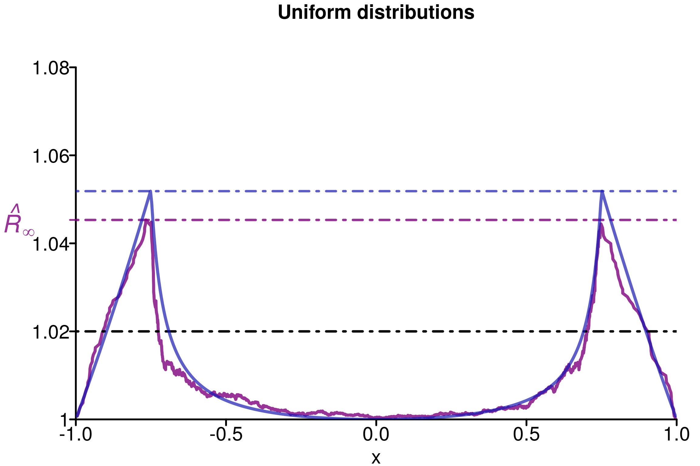
We can see that \(\hat{R}(x)\) (in violet) slightly overestimate \(R(x)\), which makes it more conservative than the population value.
We replicate the experiment 500 times and study the histogram of replications of different versions of \(\hat{R}\):
r_functions <- c(trad_rhat, rhat, rhat_infinity)
r_names <- c("R-hat",
"Rank-R-hat",
"R-hat-infinity")
r_colors <- c(colors[4], colors[5], colors[3])
R_matrix_unif <- repetitions_R(chains_func = (function() gen_chains(M, N, uniform_rdists)),
r_func = r_functions,
r_names = r_names,
reps = reps)
xlabels <- c(1, 1.02, 1.04, 1.06, 1.08, 1.1)
plot_hist(R_matrix_unif, colors = r_colors, xlabels = xlabels,
bin_size = 0.0033, lim_y_axis = reps)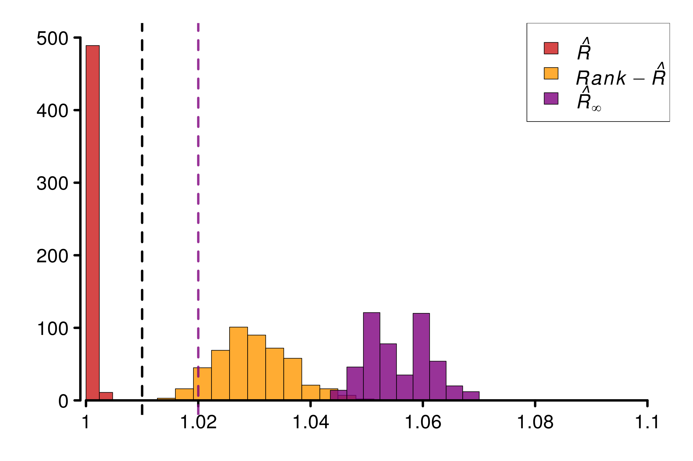
As constructed initially by Vehtari et al. (2021), this example fool the original \(\hat{R}\). The rank version and \(\hat{R}_\infty\) is on the contrary robust in this case.
Example (ii): Pareto distribution
Similarly, we check the second counter-example that fool the original \(\hat{R}\): chains with heavy-tails and different locations. To do so we consider Pareto distributions on the chains: \[\begin{align*} F_1(x) &= \cdots = F_{m-1}(x) = 1 - \left({x}/{\eta}\right)^{-\alpha}, \quad \forall x \in [\eta, +\infty),\\ \text{and}\quad F_m(x) &= 1 - \left({x}/{\eta_m}\right)^{-\alpha}, \quad \forall x \in [\eta_m, +\infty). \end{align*}\]
As an example, we choose \(\alpha = 0.8 \leq 1\) to ensure infinite moments and \((\eta, \eta_m) = (1, 1.5)\):
eta <- 1
etaM <- 1.5
alpha <- 0.8
M <- 4
pareto_dists <- c(rep(c((function(q) ppareto(q, location = eta, shape = alpha))), M-1),
(function(q) ppareto(q, location = etaM, shape = alpha)))
theoretical_r_values <- r_dist_values(npoints = 1000, xlim = c(-eta, eta*8),
dists = pareto_dists)
pareto_rdists <- c((function(n) rpareto(n, location = eta, shape = alpha)),
(function(n) rpareto(n, location = etaM, shape = alpha)))
xlabels <- c(1, 1.02, 1.04, 1.06, 1.08)
chaines <- gen_chains(M, N, pareto_rdists)
simulated_rhat <- all_local_rhat(chaines, max_nb_points = "ALL")
plot_local_r(chaines, simulated_rhat, theoretical_r_values,
plot_legend = FALSE, col=c(colors[3], colors[2]),
xlabels = xlabels, xlim = c(1,8), ylim=c(1,1.09), title ="Pareto distributions")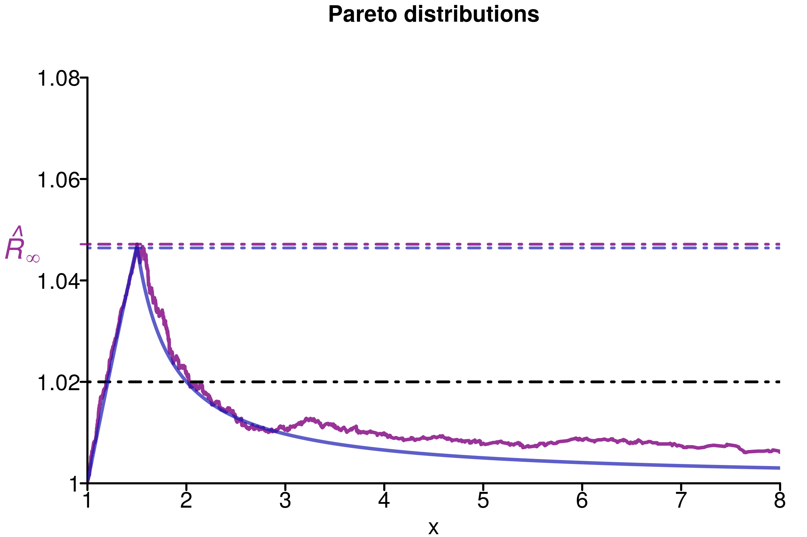
The same observations as for the previous example can be done here: \(\hat{R}_\infty\) overestimates \(R_\infty\), whose value already allowed the diagnosis of a convergence issue. We can verify the behaviour on replications:
r_functions <- c(trad_rhat, rhat, rhat_infinity)
r_names <- c("R-hat", "Rank-R-hat", "R-hat-infinity")
r_colors <- c(colors[4], colors[5], colors[3])
R_matrix_pareto <- repetitions_R(chains_func = (function() gen_chains(M, N, pareto_rdists)),
r_func = r_functions,
r_names = r_names,
reps = reps)
xlabels = c(1, 1.02, 1.04, 1.06, 1.08)
plot_hist(R_matrix_pareto, colors = r_colors, xlabels = xlabels,
plot_legend = FALSE, bin_size = 0.003, lim_y_axis = 500)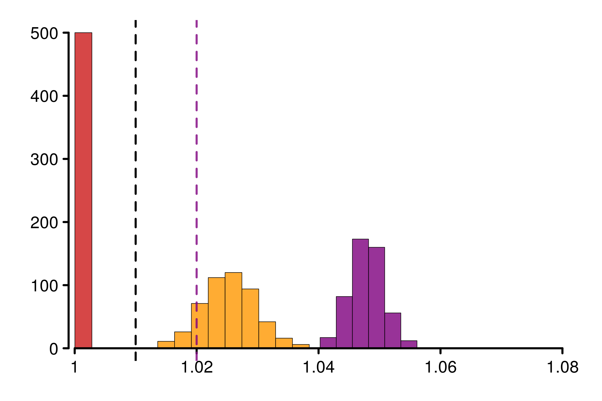
1.2 Counter examples for rank-\(\hat{R}\)
In this part, We will see 3 cases where rank-\(\hat{R}\) doesn’t manage to detect the convergence issue. These cases correspond to chains with different type of distributions, but with same mean and mean over the median.
Example (iii): Uniform and Laplace distributions
We start by an example where the population version can be computed explicitly: if one chain is uniformly distributed \(\mathcal{U}(-2\sigma, 2\sigma)\) and another one from a Laplace distribution \(\mathcal{L}(0, \sigma)\), where \(\sigma>0\), then calculations leads to \(R_\infty \approx 1.018\), which means convergence issue.
sigma <- 1/4
M <- 2
dists <- c((function(q) punif(q, -2*sigma, 2*sigma)),
(function(q) plaplace(q, mean = 0, sd = sqrt(2)*sigma)))
theoretical_r_values <- r_dist_values(npoints = 1000, xlim = c(-1.5, 1.5),
dists = dists)
rdists <- c((function(n) runif(n, -2*sigma, 2*sigma)),
(function(n) rlaplace(n, mean = 0, sd = sqrt(2)*sigma)))
chaines <- gen_chains(M, N, rdists)
simulated_rhat <- all_local_rhat(chaines, max_nb_points = "ALL")
xlabels <- c(1, 1.01, 1.02, 1.03, 1.04, 1.05)
plot_local_r(chaines, simulated_rhat, theoretical_r_values, threshold = 1.01,
xlabels = xlabels, col = c(colors[3], colors[2]),
xlim = c(-1.5,1.5), ylim=c(0.999,1.06), title ="Laplace/Uniform distributions")
Replications show that rank-\(\hat{R}\) is fooled in the same way as \(\hat{R}\) in this example:
r_functions <- c(trad_rhat, rhat, rhat_infinity)
r_names <- c("R-hat", "Rank-R-hat", "R-hat-infinity")
r_colors <- c(colors[4], colors[5], colors[3])
R_matrix_lapl_unif <- repetitions_R(chains_func = (function() gen_chains(M, N, rdists)),
r_func = r_functions,
r_names = r_names,
reps = reps)
xlabels = c(1, 1.01, 1.02, 1.03, 1.04, 1.05)
plot_hist(R_matrix_lapl_unif, colors = r_colors, bin_size = 0.002,
xlabels = xlabels, plot_legend = TRUE, threshold = 1.01,
lim_y_axis = reps, vaxis_pos = 0.998)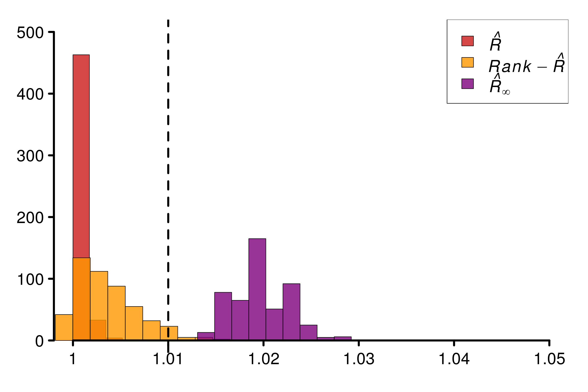
Example (iv): Uniform and Normal distributions
Similarly, others distributions are possible to build counter-examples. Consider \(m-1\) normal chains \(\mathcal{N}\left(0, \frac{\pi}{2}\sigma^2\right)\) and for the last one a uniform \(\mathcal{U}(-2\sigma, 2\sigma)\):
sigma <- 1/2
M <- 2
dists <- c((function(q) pnorm(q, mean = 0, sd = sqrt(0.5*pi)*sigma)),
(function(q) punif(q, -2*sigma, 2*sigma)))
theoretical_r_values <- r_dist_values(npoints = 1000, xlim = c(-2, 2),
dists = dists)
rdists <- c((function(n) rnorm(n, mean = 0, sd = sqrt(0.5*pi)*sigma)),
(function(n) runif(n, -2*sigma, 2*sigma)))
chaines <- gen_chains(M, 2*N, rdists)
simulated_rhat <- all_local_rhat(chaines, max_nb_points = "ALL")
xlabels <- c(1, 1.005, 1.01, 1.015, 1.02)
plot_local_r(chaines, simulated_rhat, theoretical_r_values,
xlabels = xlabels, col=c(colors[3], colors[2]), threshold = 1.01,
xlim = c(-2,2), ylim=c(0.999,1.025), title ="Gaussian/Uniform distributions")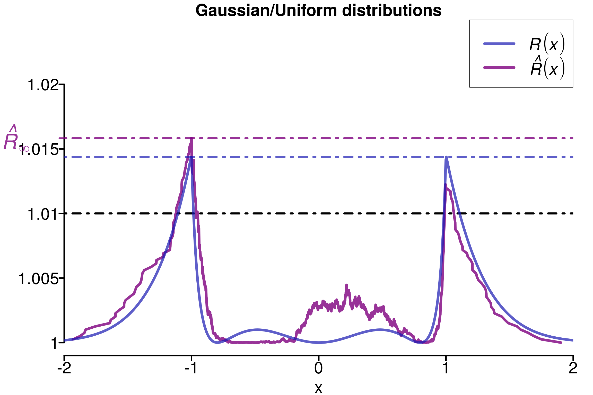
Replications confirms that this construction are fooling the different versions of \(\hat{R}\) except \(\hat{R}_\infty\).
r_functions <- c(trad_rhat, rhat, rhat_infinity)
r_names <- c("R-hat", "Rank-R-hat", "R-hat-infinity")
r_colors <- c(colors[4], colors[5], colors[3])
R_matrix_norm_unif <- repetitions_R(chains_func = (function() gen_chains(M, N, rdists)),
r_func = r_functions,
r_names = r_names,
reps = reps)
xlabels = c(1, 1.01, 1.02, 1.03)
plot_hist(R_matrix_norm_unif, colors = r_colors, xlabels = xlabels,
bin_size = 0.002, plot_legend = TRUE, threshold = 1.01,
lim_y_axis = reps, vaxis_pos = 0.999)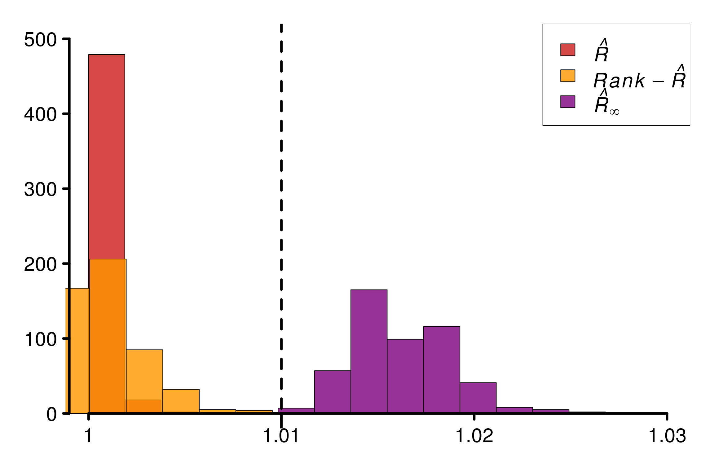
Example (v): Uniform and Exponential distributions
Finally, it is also possible to mix uniform distributions with exponential:
M <- 4
min_unif <- 1-2*log(2)
max_unif <- 1+2*log(2)
dists <- c(rep(c((function(q) pexp(q))), M-1),
(function(q) punif(q, min_unif, max_unif)))
theoretical_r_values <- r_dist_values(npoints = 500, xlim = c(-1, 6),
dists = dists)
rdists <- c((function(n) rexp(n)),
(function(n) runif(n, min_unif, max_unif)))
chaines <- gen_chains(M, N, rdists)
simulated_rhat <- all_local_rhat(chaines, max_nb_points = "ALL")
xlabels <- c(1, 1.02, 1.04, 1.06, 1.08, 1.1)
plot_local_r(chaines, simulated_rhat, theoretical_r_values,
xlabels = xlabels, col = c(colors[3], colors[2]),
xlim = c(-1, 6), ylim=c(1,1.11), title ="Exponential/Uniform distributions")
r_functions <- c(trad_rhat, rhat, rhat_infinity)
r_names <- c("R-hat", "Rank-R-hat", "R-hat-infinity")
r_colors <- c(colors[4], colors[5], colors[3])
R_matrix_exp_unif <- repetitions_R(chains_func = (function() gen_chains(M, N, rdists)),
r_func = r_functions,
r_names = r_names,
reps = reps)
plot_hist(R_matrix_exp_unif, colors = r_colors, bin_size = 0.005,
lim_y_axis = 500, vaxis_pos = 0.998)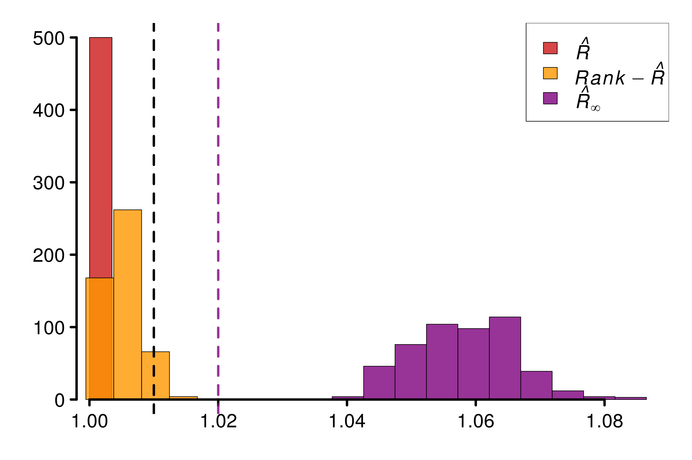
1.3 Threshold estimation
In this part we focus on the case where all the distributions are the same, to verify the behavior in the null hypothesis.
We start by looking at 4 chains uniformly distributed:
sup_unif <- 0.5
M <- 2
uniform_dists <- c(rep(c((function(q) punif(q, -sup_unif, sup_unif))), M))
theoretical_r_values <- r_dist_values(npoints = 1000, xlim = c(-sup_unif, sup_unif),
dists = uniform_dists)
uniform_rdists <- c((function(n) runif(n, -sup_unif, sup_unif)),
(function(n) runif(n, -sup_unif, sup_unif)))
chaines = gen_chains(M, N, uniform_rdists)
simulated_rhat = all_local_rhat(chaines, max_nb_points = "ALL")
plot_local_r(chaines, simulated_rhat, theoretical_r_values,
col = c(colors[3], colors[2]),
xlim = c(-0.6, 0.6), ylim=c(0.99,1.01), title ="Uniform distributions")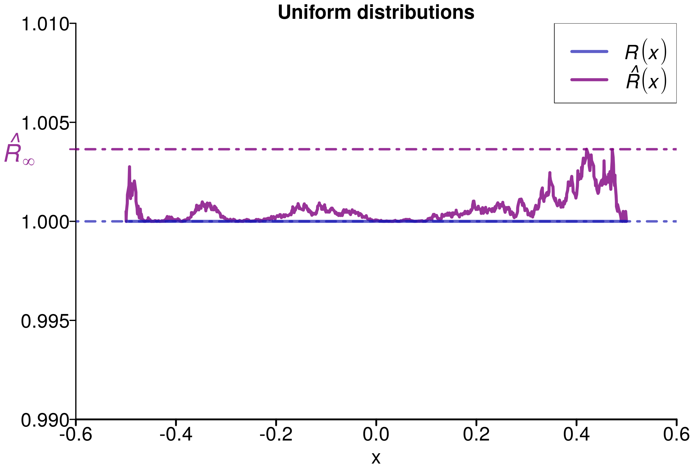
We can do the same analysis for pareto :
eta <- 1
alpha <- 0.8
M <- 2
N <- 500
pareto_dists <- c(rep(c((function(q) ppareto(q, location = eta, shape = alpha))), M))
theoretical_r_values <- r_dist_values(npoints = 1000, xlim = c(eta, eta*8),
dists = pareto_dists)
pareto_rdists <- c((function(n) rpareto(n, location = eta, shape = alpha)),
(function(n) rpareto(n, location = eta, shape = alpha)))
chaines = gen_chains(M, N, pareto_rdists)
simulated_rhat = all_local_rhat(chaines, max_nb_points = "ALL")
plot_local_r(chaines, simulated_rhat, theoretical_r_values,
col = c(colors[3], colors[2]),
xlim = c(eta, eta*8), ylim=c(0.99,1.01), title ="Pareto distributions")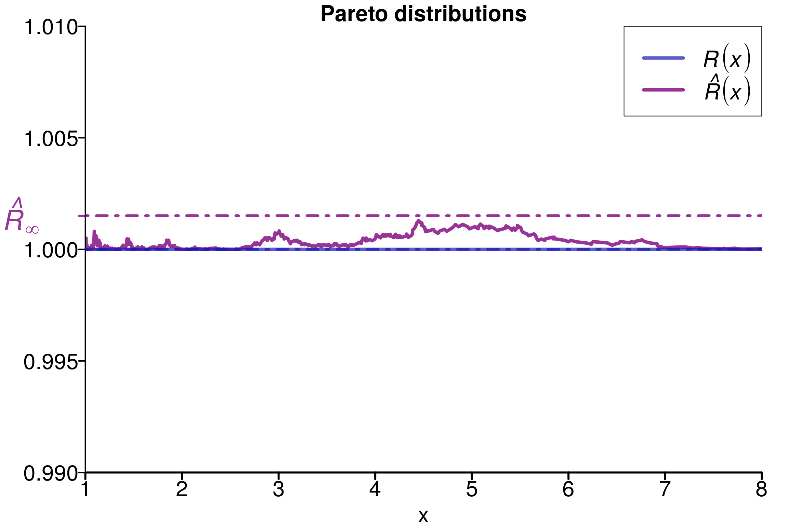
M <- 2
N <- 500
R_matrix_same_unif <- repetitions_R(chains_func = (function() gen_chains(M, N, uniform_rdists)),
r_func = c(rhat_infinity),
r_names = c("R-hat-infinity"),
reps = reps)
# R_matrix_unif <- N*(M-1)*(R_matrix_same_unif**2 - 1 + 1/N)
# R_matrix_unif <- N*M*(R_matrix_same_unif**2 - 1)
R_matrix_same_par <- repetitions_R(chains_func = (function() gen_chains(M, N, pareto_rdists)),
r_func = c(rhat_infinity),
r_names = c("R-hat-infinity"),
reps = reps)
# R_matrix_par <- N*(M-1)*(R_matrix_same_par**2-1 +1/N)
# R_matrix_par <- N*M*(R_matrix_same_par**2-1)
dist1 <- sort((R_matrix_same_unif-mean(R_matrix_same_unif)))/sd(R_matrix_same_unif)
dist2 <- sort((R_matrix_same_par-mean(R_matrix_same_par)))/sd(R_matrix_same_par)
# pdf(file = "/scratch/tmoins/Documents/Code_rhat/figure_article/qqplot1.pdf", width = 8, height = 7)
ggplot(mapping = aes(x = dist1, y = dist2)) +
geom_point() +
geom_abline(aes(slope = 1, intercept = 0), linetype = 2) +
xlab("") + ylab("Pareto distribution") +
xlim(-2, 5) + ylim(-2, 5) +
theme(axis.text=element_text(size=20), axis.title=element_text(size=24,face="bold"))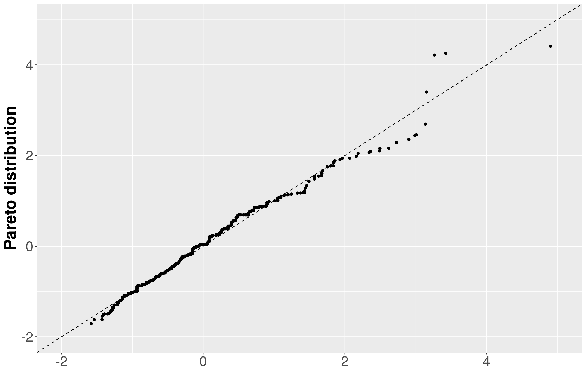
# dev.off()M <- 4
N <- 500
R_matrix_same_unif <- repetitions_R(chains_func = (function() gen_chains(M, N, uniform_rdists)),
r_func = c(rhat_infinity),
r_names = c("R-hat-infinity"),
reps = reps)
# R_matrix_unif <- N*(M-1)*(R_matrix_same_unif**2 - 1 + 1/N)
# R_matrix_unif <- N*M*(R_matrix_same_unif**2 - 1)
R_matrix_same_par <- repetitions_R(chains_func = (function() gen_chains(M, N, pareto_rdists)),
r_func = c(rhat_infinity),
r_names = c("R-hat-infinity"),
reps = reps)
# R_matrix_par <- N*(M-1)*(R_matrix_same_par**2-1 +1/N)
# R_matrix_par <- N*M*(R_matrix_same_par**2-1)
dist1 <- sort((R_matrix_same_unif-mean(R_matrix_same_unif))/sd(R_matrix_same_unif))
dist2 <- sort((R_matrix_same_par-mean(R_matrix_same_par))/sd(R_matrix_same_par))
# pdf(file = "/scratch/tmoins/Documents/Code_rhat/figure_article/qqplot2.pdf", width = 8, height = 7)
ggplot(mapping = aes(x = dist1, y = dist2)) +
geom_point() +
geom_abline(aes(slope = 1, intercept = 0), linetype = 2) +
xlab("Uniform distribution") + ylab("") +
xlim(-2, 5) + ylim(-2, 5) +
theme(axis.text=element_text(size=20), axis.title=element_text(size=24,face="bold"))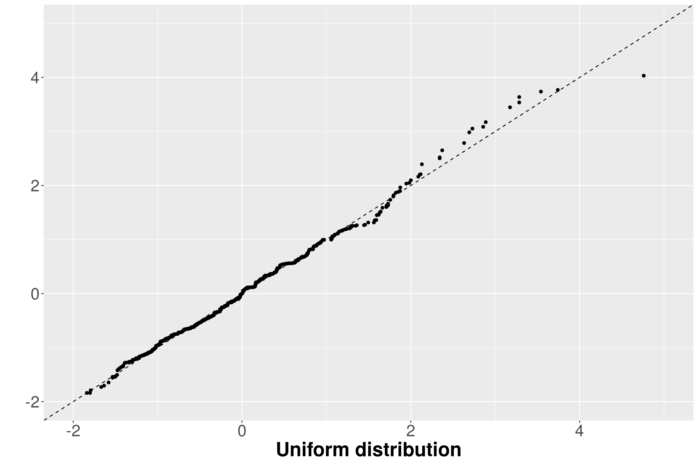
# dev.off()M <- 8
N <- 500
R_matrix_same_unif <- repetitions_R(chains_func = (function() gen_chains(M, N, uniform_rdists)),
r_func = c(rhat_infinity),
r_names = c("R-hat-infinity"),
reps = reps)
# R_matrix_unif <- N*(M-1)*(R_matrix_same_unif**2 - 1 + 1/N)
# R_matrix_unif <- N*M*(R_matrix_same_unif**2 - 1)
R_matrix_same_par <- repetitions_R(chains_func = (function() gen_chains(M, N, pareto_rdists)),
r_func = c(rhat_infinity),
r_names = c("R-hat-infinity"),
reps = reps)
# R_matrix_par <- N*(M-1)*(R_matrix_same_par**2-1 +1/N)
# R_matrix_par <- N*M*(R_matrix_same_par**2-1)
dist1 <- sort((R_matrix_same_unif-mean(R_matrix_same_unif))/sd(R_matrix_same_unif))
dist2 <- sort((R_matrix_same_par-mean(R_matrix_same_par))/sd(R_matrix_same_par))
# pdf(file = "/scratch/tmoins/Documents/Code_rhat/figure_article/qqplot3.pdf", width = 8, height = 7)
ggplot(mapping = aes(x = dist1, y = dist2)) +
geom_point() +
geom_abline(aes(slope = 1, intercept = 0), linetype = 2) +
xlab("") + ylab("") +
xlim(-2, 5) + ylim(-2, 5) +
theme(axis.text=element_text(size=20), axis.title=element_text(size=24,face="bold"))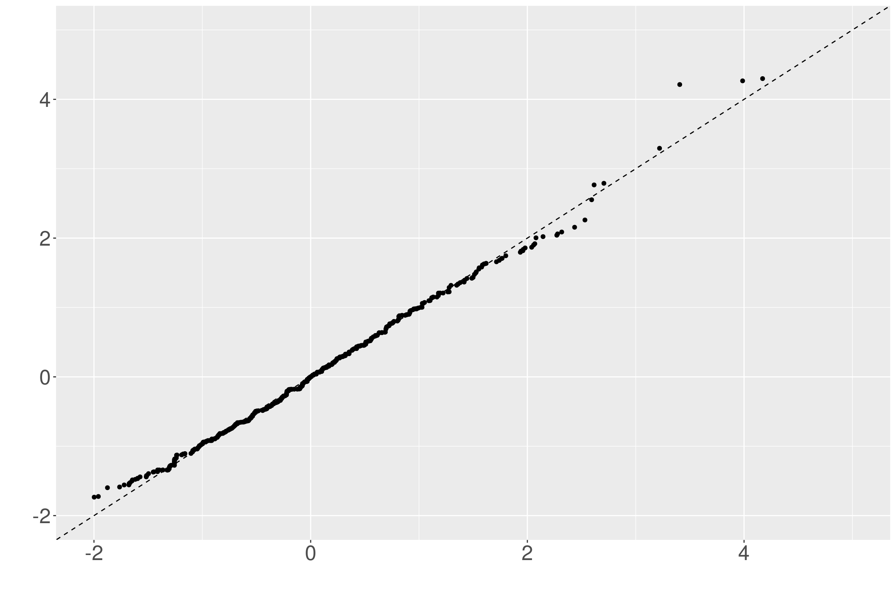
# dev.off()M <- 2
N <- 200
r_functions <- c(rhat_infinity)
r_names <- c("R-hat-infinity")
r_colors <- c(colors[3])
R_matrix_same_unif <- repetitions_R(chains_func = (function() gen_chains(M, N, uniform_rdists)),
r_func = r_functions,
r_names = r_names,
reps = reps)
# pdf(file = "/scratch/tmoins/Documents/Code_rhat/figure_article/same_unif_1.pdf", width = 8, height = 7)
xlabels = c(1, 1.01, 1.02, 1.03, 1.04)
plot_hist(R_matrix_same_unif, colors = r_colors, plot_threshold = T,
threshold = 1.01, xlabels = xlabels, bin_size = 0.0020,
lim_y_axis = 200, vaxis_pos = 1, plot_legend = F)
# dev.off()M <- 4
N <- 100
r_functions <- c(rhat_infinity)
r_names <- c("R-hat-infinity")
r_colors <- c(colors[3])
R_matrix_same_unif <- repetitions_R(chains_func = (function() gen_chains(M, N, uniform_rdists)),
r_func = r_functions,
r_names = r_names,
reps = reps)
# pdf(file = "/scratch/tmoins/Documents/Code_rhat/figure_article/same_unif_2.pdf", width = 8, height = 7)
xlabels = c(1, 1.01, 1.02, 1.03, 1.04)
plot_hist(R_matrix_same_unif, colors = r_colors, plot_threshold = F,
xlabels = xlabels, bin_size = 0.002,
lim_y_axis = 200, vaxis_pos = 1, plot_legend = F)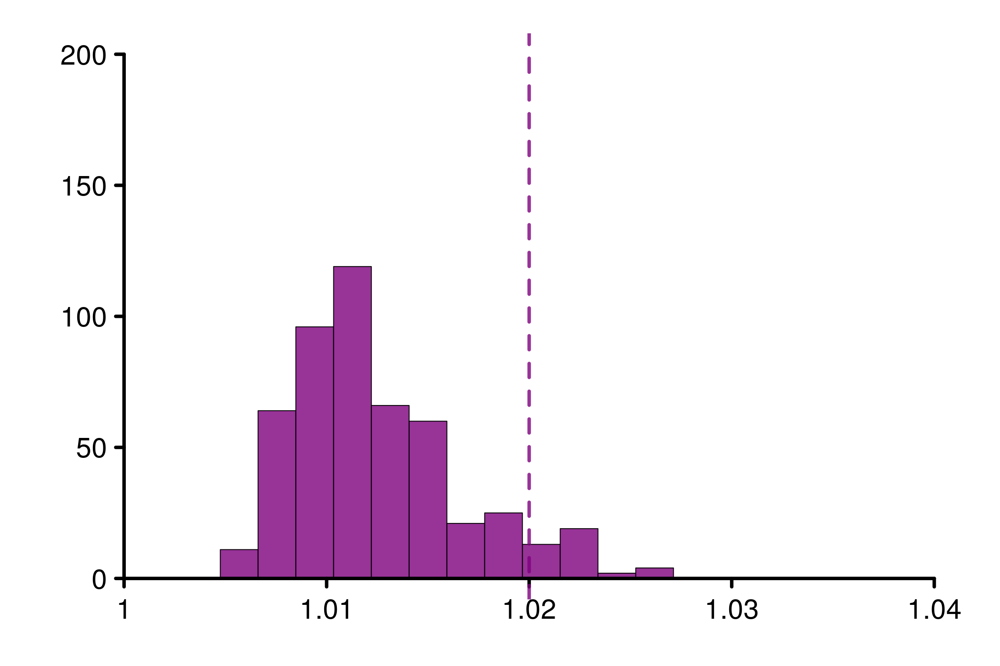
# dev.off()M <- 8
N <- 50
r_functions <- c(rhat_infinity)
r_names <- c("R-hat-infinity")
r_colors <- c(colors[3])
R_matrix_same_unif <- repetitions_R(chains_func = (function() gen_chains(M, N, uniform_rdists)),
r_func = r_functions,
r_names = r_names,
reps = reps)
# pdf(file = "/scratch/tmoins/Documents/Code_rhat/figure_article/same_unif_3.pdf", width = 8, height = 7)
xlabels = c(1, 1.01, 1.02, 1.03, 1.04)
plot_hist(R_matrix_same_unif, colors = r_colors, plot_threshold = F,
threshold = 1.03, xlabels = xlabels, bin_size = 0.002,
lim_y_axis = 200, vaxis_pos = 1)
# dev.off()get_r_lim_infinity <- function(M, N, alpha,
reps = 500, N_estimation = 500){
R_matrix_same_unif <- repetitions_R(chains_func = (function() gen_chains(M, N_estimation, uniform_rdists)),
r_func = c(rhat_infinity),
r_names = c("R-hat-infinity"),
reps = reps)
q <- quantile(N_estimation*M*(R_matrix_same_unif**2 - 1),
probs = c(1-alpha))
return (sqrt(1+ q/(N*M)))
}
get_alpha_infinity <- function(M, N, rlim, reps = 500,
N_estimation = 500){
R_matrix_same_unif <- repetitions_R(chains_func = (function() gen_chains(M, N_estimation, uniform_rdists)),
r_func = c(rhat_infinity),
r_names = c("R-hat-infinity"),
reps = reps)
empirical_dist <- ecdf(N_estimation*M*(R_matrix_same_unif**2 - 1))
return (empirical_dist(N*M*(rlim**2-1)))
}
m_range <- c(2, 4, 8) #, 10, 15)
alpha_range <- c(0.001, 0.005, 0.01, 0.05, 0.1)
r_lim_tab <- c()
for (m in m_range){
r_row <- c(m)
for (alpha in alpha_range){
r_row <- c(r_row, get_r_lim_infinity(M = m, N = 400/m, alpha = alpha))
}
r_lim_tab <- rbind(r_lim_tab, r_row)
}
colnames(r_lim_tab) <- c("m", alpha_range)
r_lim_tab m 0.001 0.005 0.01 0.05 0.1
r_row 2 1.017687 1.018288 1.015149 1.012293 1.010550
r_row 4 1.029966 1.028381 1.024239 1.018648 1.017346
r_row 8 1.040505 1.038556 1.035629 1.029777 1.0278121.4 Summary
data=data.frame(r_version, r_experiment, r_values)
ggplot(data, aes(x=r_experiment, y=r_values, fill=r_version)) +
geom_boxplot() +
geom_hline(yintercept=1.01, linetype="dashed",
color = "black", size=0.5) +
xlab("Experiments") + ylab("Values")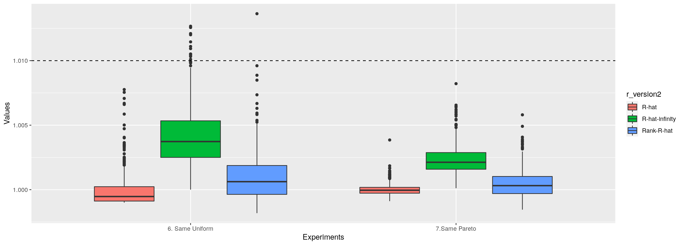